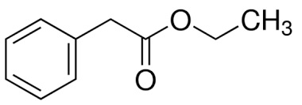
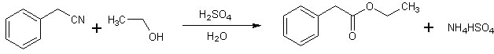
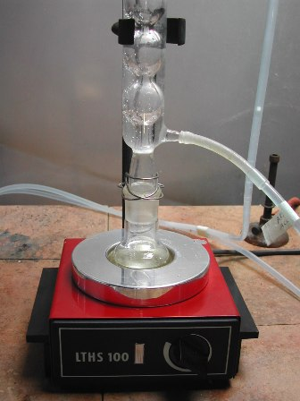
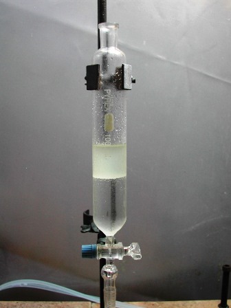
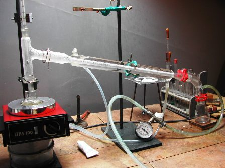
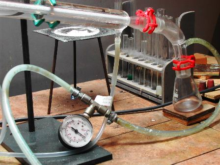
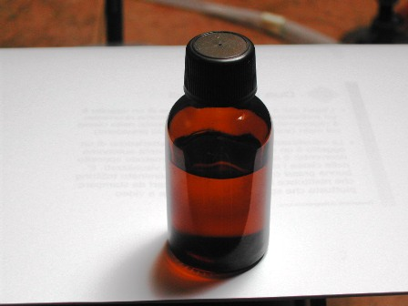

Ho fatto questa sintesi per quattro buoni motivi:
a- il fenilacetato di etile è un estere, e come si sa gli esteri mi sono tutti simpatici
b- il prodotto è odoroso... alla grande, di bene in meglio!
c- non è la solita esterificazione di Fischer, ma si parte da un nitrile
d- ...avevo giusto un po' di quel nitrile!
Cosa volere di più? Quando l'ho vista su OrgSyn, mi son detto che anche questa era una sintesi giusta per divertirsi... non si può non provarla!
Chef, fai apparecchiare pentole e fornelli, mettiti il cappello a fungo ed affila i coltelli!

Materiale occorrente:
- toluonitrile (benzilcianuro) C6H5-CH2-CN
- etanolo CH3-CH2-OH
- acido solforico
- mantello riscaldante
- distillazione a pressione ridotta
- vetreria opportuna
[Piccolo inciso: magari chi passa di qui per caso e vede la larola "cianuro", che ho messo apposta, sobbalza sulla sedia.
Non c'è niente da sobbalzare; i cianuri organici, più propriamente detti "nitrili", sono caratteristici per il gruppo funzionale -CN e la loro tossicità (che dipende dal resto della molecola) è assai inferiore a quella degli omonimi cianuri alcalini, anche se sono sostanze (come tutte, del resto!) da trattare con l'opportuna discrezione.
In ogni caso riferirsi sempre a quell'universale principio paracelsiano che dice da sette secoli: tutto è veleno, ma ciò che conta è la quantità. Fine dell'inciso].

- In un palloncino da 100 ml porre mescolando 46 ml di etanolo, 21 ml di H2SO4 e 22,5 ml di toluonitrile.Preparare il setup per il riscaldamento a ricadere e portare a leggera ebollizione: mi sono preso largo rispetto alla bibliografia ed avendo un po' di tempo in esubero ho lasciato a riflusso per nove ore.
La miscela si separa ben presto in due strati, ma il riscaldamento avviene tranquillo senza sovraebollizioni.
Ogni tanto occorre aumentare gradualmente, verso la fine rispetto all'inizio, la temperatura del termomanto (all'inizio c'è tanto etanolo, che va gradualmente scomparendo).
Durante la reazione si sente alla bocca dell'allhin sia l'odore della piccola quantità di etere che si forma, sia l'aroma mielato dell'acido fenilacetico... questo detto solo per completezza.

Finito il riflusso, col raffreddamento si nota l'abbondante separazione del bisolfato ammonico formatosi; versare il tutto in 100 ml di acqua; per mezzo di un imbuto separatore separare lo strato organico superiore ed eliminare l'eccesso acido/salino più pesante.Lavare con una soluzione al 10% da Na2CO3 (o q.b. di NaHCO3) per rimuovere l'acidità residua e la piccola quantità di acido fenilacetico che si è formato.
(Si potrebbe recuperare anche questo prodotto, ma non ho proceduto in tal senso).

Distillazione a pressione ridotta col vacuometro in testa al refrigerante

Preparare ora un setup per la distillazione a pressione ridotta e procedere con la purificazione; ho tenuto una pressione di circa 40-45 mm di Hg e distillato nel range 145-155° (è difficile tenere la pressione costante), ma non ho dovuto scaldare eccessivamente per far passare l'estere; nel pallone rimane alla fine solo un piccolo residuo da eliminare.
Il p.e. a 760 mmHg è 226°, 135°a 32 mm - d. 1,02
La resa è stata di 24 g di estere, pari a circa l'80%, poco meno della bibliografia.

Il fenilacetato di etile, un altro dei numerosissimi composti chimici usati in profumeria, si presenta come un liquido leggermente oleoso, limpido e incoloro, di odore caratteristico fruttato aromatico e molto persistente come di anice con sottofondo mielato, tipico dell'acido fenilacetico. A dir la verità me lo aspettavo "molto" più mielato: ecco perchè è bello andarci a mettere proprio il naso... in senso letterale!
Al prossimo estere (odoroso, s'intende!).